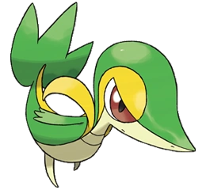
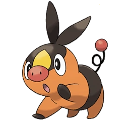
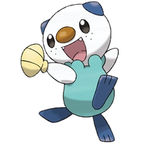
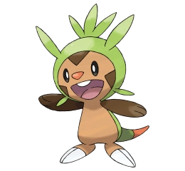
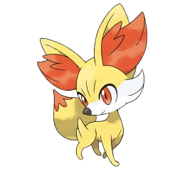

Quinta generación
- Snivy

- Snivy está basado en una serpiente, aunque por su aspecto y pérdida de las extremidades conforme
evoluciona se puede deducir que está basado en algún tipo de escíncido o serpientes Uromacer
Oxyrhynchus. Su cuerpo es predominantemente de color verde. Sobre sus brazos cuenta con dos
estructuras curvadas de un color amarillo más vivo que el de la franja que recorre su cuerpo.
Su cola, en forma de hoja, es la encargada de realizar la fotosíntesis. Si se queda sin energía,
ésta se dobla hacia abajo. Se dice que cuando son salvajes, también tienen la capacidad de
adaptarse mejor al medio que les rodea, siendo esto naturalmente en bosques o selvas muy densas,
aunque cuando es entrenado, se transforma en pedante y altanero. Se dice que si cree que su
entrenador no es digno de él, lo abandonará. Los Snivy son muy elegantes, y fuertes, por eso no
aguantan perder de ninguna manera. Cuando le baña el sol, sus movimientos se vuelven mucho más
veloces. Puede resultar ser un Pokémon muy orgulloso, pero cuando se le entrena bien será un Pokémon
muy fiel.
- Tepig

- La esfera roja de su cola absorbe los rayos solares convirtiéndolos en pura energía que pasa al
centro de su cuerpo, fortaleciendo de ese modo sus ataques de tipo fuego, Dependiendo de qué ataques
use, la esfera de su cola empieza a brillar con una gran intensidad. Al evolucionar esta esfera roja
desaparece de su cola, pasando a estar en el centro de su cuerpo donde antes se acumulaba toda la energía
absorbida, así se van fortaleciendo aún mucho más sus ataques ya sean de tipo fuego o lucha.
Tepig es un pequeño Pokémon parecido a un cerdo. Aspira a ser un gran luchador como los Emboar.
Son raros de ver en la región Teselia, pero los tutores de esta región se las apañan para atraparlos
y después entregarlos a jóvenes entrenadores. Es ágil al evitar los ataques del enemigo, utiliza ataques
de tipo fuego que puede lanzar a través de los orificios de su nariz, ataques como por ejemplo ascuas.
Asa bayas con sus llamas y se las come bien tostadas. Cuando se resfría, las llamas que expulsa de su
nariz se convierten en humo negro, fácil de confundir con humo de hogueras descontroladas, por lo que los
Pokémon Ranger deben de estar atentos de la salud de este Pokémon, para no tener que ponerse alerta por
un Tepig resfriado.
- Oshawott

- Oshawott es un pequeño Pokémon parecido a una nutria marina bípeda. Oshawott tiene una cabeza grande,
blanca y esférica, con orejas pequeñas en forma cónica de color azul oscuro. Los ojos de Oshawott son
grandes, oscuros y de forma ovoide. Su nariz es de color marrón de forma ovalada. Oshawott también posee
manchas a los lados de su cara, haciendo referencia a las barbas cortas que poseen las nutrias jóvenes.
También posee un extraño "collar" alrededor de su cuello, que recuerda a pequeñas burbujas. El torso
de Oshawott es de color azul claro y posee una especie de adhesivo que mantiene su concha de color
amarillo pálido pegada en el centro. Hecha de queratina, esta concha se puede quitar y es utilizada
con la versatilidad de una espada (con la que ataca y se protege), incluso se la ha visto utilizada
de manera parecida a un shuriken. Sus pequeños brazos redondeados son de color blanco, y sus pies, que,
a diferencia de sus brazos, son de color azul oscuro, el mismo que sus orejas y su cola. Oshawott
también posee una cola planchada y larga, que le permite nadar a mayor velocidad. Suele nadar de espaldas,
usando solo los pies y la cola.
Sexta generación
- Chespin

- Su forma corporal es similar a la de un erizo. Tiene el cuerpo marrón y una capucha de color verde con
varios
pinchos alrededor, simulando la cápsula espinosa de las castañas, conocida como erizo. Posee grandes garras
blancas
y notorias en sus patas inferiores e incisivos prominentes. Su cola acaba en punta y es de color naranja, al
igual que su nariz.
Debido a su naturaleza curiosa, se mete en líos a menudo; sin embargo Chespin es un Pokémon optimista que no
suele preocuparse por los problemas, lo que da muestra de su naturaleza amigable y gentil.
Además, Chespin puede cargar energía y usarla para convertir sus suaves púas en unas muy duras y afiladas,
con
las que puede atravesar rocas.
- Fennekin

- Fennekin está basado en un Fénec, un mamífero carnívoro, de la familia de los zorros, que habita en el
desierto
del Sáhara. Tiene el cuerpo de color amarillo con detalles en blanco. Sus ojos son alargados y de color
anaranjado
al igual que el pelaje que sale de sus orejas (que recuerda a un par de llamas) y al final de su cola.
A este Pokémon le encanta mordisquear ramitas y le emana un aire abrasador por las orejas. Puede que
Fennekin
sea de carácter serio, pero siempre hace todo lo posible por su entrenador.
- Froakie

- La apariencia de este Pokémon es similar a la de un sapo o rana. Aunque por sus burbujas en la parte
posterior
de la cabeza, podría estar basado en la especie de sapo "Rhinella arenarum" que es conocida por producirlas.
Tiene el cuerpo de color celeste con una franja azul oscura entre sus ojos de color amarillo y pupilas
negras.
Posee una especie de espuma de color blanco en su nariz y a su vez éste también rodea su cuello y llega
hasta
la espalda. Tiene una coloración blanca en sus manos que se asemejan a guantes.
Las burbujas que tiene en el pecho y en la espalda le protegen de los ataques rivales. Froakie es tan ligero
como fuerte y puede saltar muy alto. A veces parece que siempre está distraído, pero, en realidad, vigila
con
mucha atención a todo lo que le rodea. Al evolucionar, pierde esos dedos tan anchos de las manos y las patas
para ser más ágil.
Su espalda y cuello están llenas de burbujas espumosas que pueden agrandarse hasta cubrirle toda la cara,
principalmente cuando se siente bien.